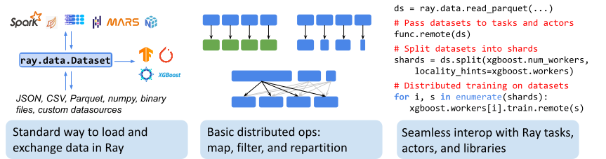
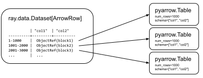

글쓰기에 앞서 본 포스팅은 제가 Ray Datasets를 이해하고자 쓰는 글입니다. 글의 구성은 1). Ray Datasets에 대한 공식문서 번역, 2). parquet 파일을 Ray Dataset으로 활용하는 방법에 대해서 소개하려고 합니다.
Ray Datasets
Ray Dataset은 Ray 라이브러리와 애플리케이션에서 데이터를 불러오고 교환하는데 사용하는 기본적인 방법입니다. Datasets는 map.filter, repartition과 같은 분산 데이터 변환을 기본적으로 제공하고, 다양한 데이터 포맷, 데이터 소스, 분산 프레임워크와 호환됩니다.

개념
Ray Datasets는 Distributed Arrow의 구현체입니다. Dataset은 block을 참조하고있는 Ray object의 list로 구성되어있습니다. 각 block은 Python list나 Arrow Table을 가지고있습니다. Dataset에 다수의 block이 있다면, 데이터 병렬 변환 및 수집이 가능합니다.
다음은 3개의 Arrow table block를 갖는 Dataset을 시각화한 그림입니다. 여기서 각 block은 1,000개의 row를 가지고있다고 가정했습니다.

Ray Dataset은 Ray object reference들을 모아놓은 list일 뿐이므로, Ray tasks, actor, 라이브러리 간에 자유롭게 전달할 수 있습니다. 이러한 유연성은 Ray Dataset의 고유한 특징입니다.
Spark RDDs나 Dask Bags과 비교했을 때, Datasets은 조금 더 기본적인 feature의 집합을 제공하고 단순함을 위해 작업(operation)을 즉시 실행(eagerly)합니다. 이는 사용자가 Datasets를 다른 dataframe type(ds.to_dask())으로 casting할 수 있도록 의도한 것입니다. 다른 dataframe type으로 cating하게되면, 특정 dataframe type에서만 사용할 수 있는 고급 operation을 사용할 수 있게됩니다.
# Create a Dataset of Python objects. ds = ray.data.range(10000) # -> Dataset(num_blocks=200, num_rows=10000, schema=<class 'int'>)
ds.take(5) # -> [0, 1, 2, 3, 4]
ds.count() # -> 10000
# Create a Dataset of Arrow records. ds = ray.data.from_items([{"col1": i, "col2": str(i)} for i inrange(10000)]) # -> Dataset(num_blocks=200, num_rows=10000, schema={col1: int64, col2: string})
마지막으로, Ray object store에 있거나 Ray와 호환되는 Distributed DataFrame에 있는 데이터로부터 Dataset을 만들 수 있습니다. 아래 예제는 pandas의 DataFrame과 dask의 dataframe을 Ray Dataset으로 변환하는 예제입니다.
1 2 3 4 5 6 7 8 9 10
import pandas as pd import dask.dataframe as dd
# Create a Dataset from a list of Pandas DataFrame objects. pdf = pd.DataFrame({"one": [1, 2, 3], "two": ["a", "b", "c"]}) ds = ray.data.from_pandas([pdf])
# Create a Dataset from a Dask-on-Ray DataFrame. dask_df = dd.from_pandas(pdf, npartitions=10) ds = ray.data.from_dask(dask_df)
Datasets 저장하기
Datasets는 .write_csv(), .write_json(), .write_parquet() API를 통해 local이나 remote storage에 저장할 수 있습니다.
1 2 3 4 5 6 7
# Write to csv files in /tmp/output. ray.data.range(10000).write_csv("/tmp/output") # -> /tmp/output/data0.csv, /tmp/output/data1.csv, ...
# Use repartition to control the number of output files: ray.data.range(10000).repartition(1).write_csv("/tmp/output2") # -> /tmp/output2/data0.csv
또한 Dataset을 Ray와 호환되는 Distributed DataFrames로 변환할 수 있습니다.
1 2
# Convert a Ray Dataset into a Dask-on-Ray DataFrame. dask_df = ds.to_dask()
Dataset 변환
Datasets는 .map()을 사용하면 병렬적으로 변환작업을 수행할 수 있습니다. 변환(Transformation)은 즉시(eagerly) 실행되며 작업(operation)이 끝날 때까지 blocking됩니다. Datasets는 .filter(), .flat_map()을 지원합니다.
# Apply GPU batch inference with actors, and assign each actor a GPU using # ``num_gpus=1`` (any Ray remote decorator argument can be used here). ds = ds.map_batches(BatchInferModel, compute="actors", batch_size=256, num_gpus=1) # -> Map Progress (16 actors 4 pending): 100%|██████| 200/200 [00:07, 27.60it/s]
# Save the results. ds.repartition(1).write_json("s3://bucket/inference-results")
Datasets의 교환
Datasets는 Ray tasks나 actor에 전달할 수 있고 .iter_batches()나 .iter_rows()를 통해 읽어들일 수 있습니다. 이 때, 읽기 작업은 복사를 수행하는 것이 아니라 block들의 reference가 담긴 Ray objects로 전달합니다.
1 2 3 4 5 6 7 8 9 10
@ray.remote defconsume(data: Dataset[int]) -> int: num_batches = 0 for batch in data.iter_batches(): num_batches += 1 return num_batches
defload_df_from_ds(self, shard: ray.data.Dataset): l = [] for batch in shard.iter_batches(): df = batch.to_pandas() l.append(df) # ... pandas processing return l
# Ray actor class 정의 @ray.remote classWorker(): def__init__(self, rank: int): pass
defload_df_from_ds(self, shard: ray.data.Dataset): l = [] for batch in shard.iter_batches(): df = batch.to_pandas() l.append(df) # ... pandas processing return l
# 샘플 데이터 저장 json_data = {"col1":{"row1":1,"row2":2,"row3":3},"col2":{"row1":"x","row2":"y","row3":"z"}} df = pd.DataFrame(json_data)
df.to_parquet("./sample/sample.parq")
data_path = Path("./sample").absolute()
# 데이터셋 로드 parq_list = list(map(str, data_path.glob("*.parq"))) ds = ray.data.read_parquet(parq_list)
# Ray actor 생성 및 Ray Datasets을 split workers = [Worker.remote(i) for i inrange(10)] shards = ds.split(n=10, locality_hints=workers)
# Ray 코드 실행 print(ray.get([workers[rank].load_df_from_ds.remote(s) for rank, s inenumerate(shards)]))
MML book 스터디를 진행하고있습니다. 이번 포스팅은 MML book Chapter 3.5. Orthonormal Basis에 대해서 정리한 내용입니다.
Chapter 2.6.1에서 basis vector의 속성을 살펴봤었습니다. 이 때, $n$-차원 벡터 공간에서 서로 선형 독립인 $n$개의 basis vector가 필요함을 배웠었습니다.
또한 Chapter 3.3과 3.4에서는 inner product를 벡터의 길이, 벡터 간 각도를 구하기 위해서 사용했었습니다. 이번 Chapter에서는 basis vector가 서로 orthogonal하고 basis vector의 길이가 1인 orthonormal basis basis에 대해서 이야기할 것입니다.
이 orthonormal basis의 개념은 나중에 support vector machine과 PCA를 다루는 Chapter 12, Chapter10에서 활용하게 될 것입니다.
2021.05.05 현재 RTX3090은 CUDA11 이상을 지원하는 딥러닝 프레임워크에 버전에서만 사용할 수 있습니다. 하지만 단순하게 pip install torch==1.7.1 torchvision==0.8.2 형태로 설치하면 CUDA error: no kernel image is available for execution on the device 에러를 마주할 수 있습니다. 이 때에는 반드시 pip install torch==1.7.1+cu110 torchvision==0.8.2+cu110 -f https://download.pytorch.org/whl/torch_stable.html형태로 설치해주어야합니다.
Alpine linux는 용량이 80MB이고, 컨테이너 이미지는 5MB밖에 안되는 초경량화된 리눅스 배포판입니다. alpine linux는 용량을 줄이기 위해 시스템의 기본 C runtime을 glibc 대신 musl libc 를 사용하는데요. 이로 인해 제가 즐겨쓰는 ubuntu기반의 작업들이 동작하지 않는 경우가 있습니다. 그 중 ubuntu에서의 locale 명령어가 대표적입니다. ubuntu의 locale은 glibc 기반으로 구현되어있기 때문에 alpine linux에서는 apk add locale 명령어로는 설치할 수 없습니다. 이번 포스팅은 alpine linux에서 locale을 설정하는 방법에 대해서 다룹니다.